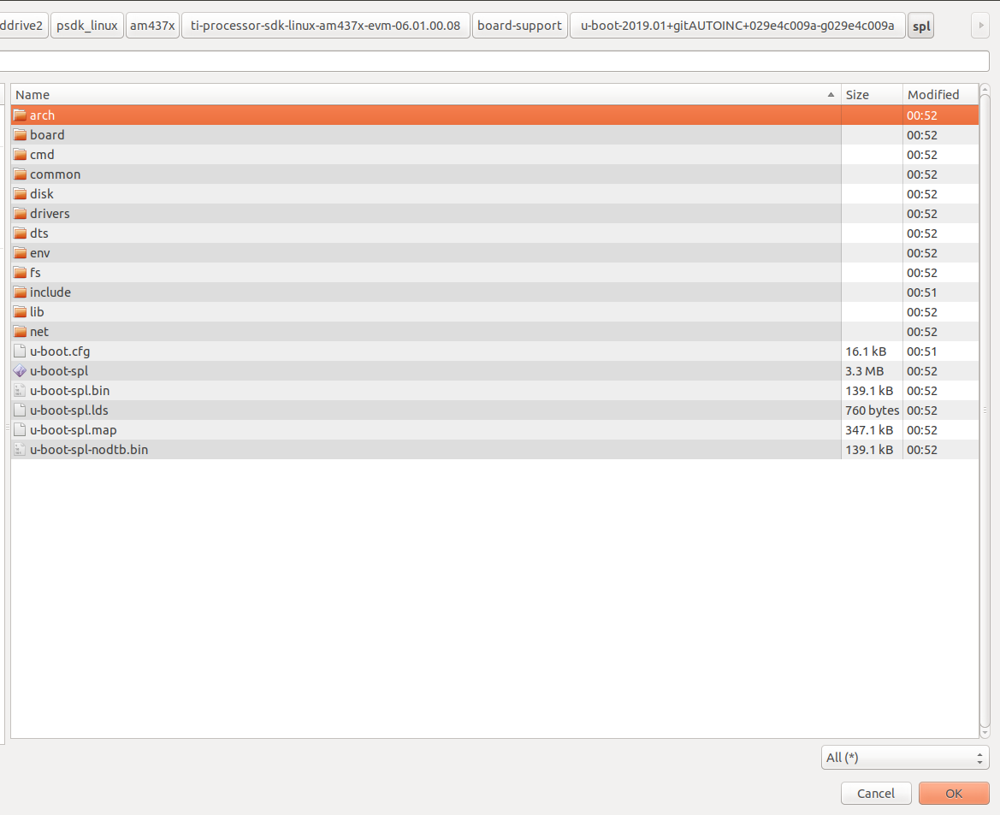
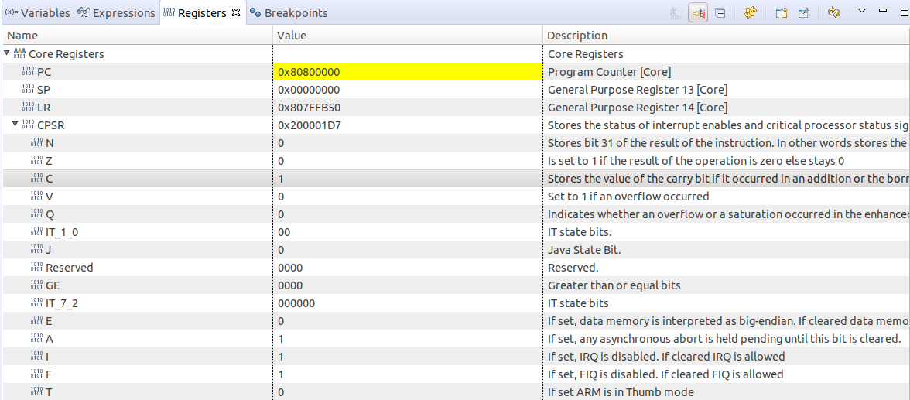

3.1.2.3. Loading Uboot through CCS¶
The below lab is going to walk you through the process of using CCS to load SPL/U-Boot images on the AM437x EVM. The same process applies to other boards as well.
3.1.2.3.1. Step 1: Software Downloads¶
A Linux host system configured in accordance with the Processor SDK Linux Getting Started Guide, with the latest Processor Software Development Kit (PSDK) and Code Composer Studios (CCS) installed. Please refer to the release notes. This document was written using Ubuntu 18.04, Processor SDK Linux 06.03, and CCS 10.0.
3.1.2.3.2. Step 2: Testing Hardware Connection¶
Remove the SD card from board and setup USB cable connection between the board and your Linux Host
Power on the board
Open a terminal and run the following command to find the USB serial adapters available on the system : “dmesg | grep tty”
[ 0.000000] console [tty0] enabled
[ 0.554632] 00:06: ttyS0 at I/O 0x3f8 (irq = 4, base_baud = 115200) is a 16550A
[ 29.566576] usb 2-1.6.1.1: pl2303 converter now attached to ttyUSB0
NOTE: The ttyUSB<x> will be different based on the host machine connections.
Launch a serial terminal (the terminal displayed below is created with $minicom -w -s) and configure it as below:

You should now see a minicom window with “ccccc” being printed. Go ahead and leave this console RUNNING in the background.

3.1.2.3.3. Step 3: Building the SPL/Uboot images¶
Open another console terminal and navigate to the latest PSDK that was installed
Change directories to the Uboot source code and open the defconfig file associated with your board: “<psdk_dir>/board-support/u-boot-xxx+yyyy/configs/am43xx_evm_defconfig”
Before we compile the Uboot, please add the following flag “CONFIG_OF_EMBED=y” in the am43xx_evm_defconfig file. If you refer to the <u-boot_dir>/README file, it mentions “If this variable is defined, U-Boot will embed a device tree binary in its image.” Please keep in mind that this is suitable for debugging and development only and is not recommended for production.
There are two methods of compiling Uboot: method1 and method2. Both methods will generate the necessary files required for Uboot debugging
Upon successful compilation, there are a total of 3 images that we are interested:
Location |
Image Name |
Description |
|---|---|---|
<psdk_dir>/board-support/u-boot-u-boot-xxx+yyyy/spl |
u-boot-spl |
Full SPL image containing all debug symbols |
<psdk_dir>/board-support/u-boot-u-boot-xxx+yyyy/spl |
u-boot-spl.bin |
Stripped binary SPL image that can fit into the internal memory |
<psdk_dir>/board-support/u-boot-u-boot-xxx+yyyy |
u-boot |
ELF image that contains debug symbols and the device tree files |
3.1.2.3.4. Step 4: CCS Configuration¶
Launch CCS and select File -> New -> Target Configuration File
In the New Target Configuration dialog box give the configuration a name. For this lab, we will use the name AM437x

Click Use shared location, then Click Finish
The AM437x configuration you created will now be opened for editing. Perform the following steps to finish the target configuration:
In the Connection drop-down box select Texas Instruments XDS100v2 USB Emulator. If you are using a different emulator please select that one instead
In the Board or Device selection list check the AM4378 device. Please do not select any “IDK” or “EVM” option because it will load the GEL files and we do not want that
Click the Save button at the right of the screen
You can now test your target connection by pressing the Test Connection button at the right of the screen.

Close the Test Connection dialog box
3.1.2.3.5. Step 5: Change ARM mode¶
Launch the target configuration we created in the previous step
Click View -> Target Configurations. This should open a tab on the right side of your screen called Target Configurations
Expand the User Defined list
Right-Click the AM437x configuration and select Launch Selected Configuration
The view should have changed to a Debug tab (may take a few minutes to launch)

Right-Click the CortxA9 line item and select Connect Target
To set the processor in ARM Mode (not THUMB mode) with CCS use the following steps:
Select the Registers tab

Expand the Core Registers and inside of Core Registers expand the CPSR list

Scroll down in the CPSR register list and change the T register from 1 to 0.
You should see the CPSR value change to reflect the new value

The above steps need to be performed every time the board is powered completely off or reset
3.1.2.3.6. Step 6: Loading SPL¶
To load the SPL binary into the internal chip memory, please use the following steps:
Click Tools -> Load Memory. The Load Memory tool is used here because we are loading the SPL binary and not and ELF image. The reason for this is that the binary is sized to be able to fit into the internal RAM of the SoC
Click the Browse button and navigate to the u-boot-spl.bin file (Refer to Step3 for binary location)
Select the u-boot-spl.bin file and click OK. For the file type, leave it as “TI Raw Data”
Start Address: 0x402F4000. This is the start address of the SPL binary as defined in the u-boot sources. To confirm the start address, please navigate to the file “<psdk_dir>/board-support/u-boot-u-boot-xxx+yyyy/spl/u-boot-spl.map” and search for “__start”

Click Finish and you should see a box pop up showing the memory load operation

To load the symbols for the binary to allow source level debugging
Click Run -> Load -> Load Symbols…
In the dialog box, click the Browse button
Like before browse to the spl directory and change the filter to All
Select the u-boot-spl file which is the ELF executable that also contains the symbols and click OK
Ensure the Code Offset and Data Offset are blank
Now that the binary and symbols are loaded, we need to set the program counter to the beginning of the SPL code. Click on the Registers Tab and in the Core Registers list, change the PC value to the start address you entered before (0x402F4000)

Open the Disassembly view by clicking View -> Disassembly, ensure that the PC equals 0x402F4000

At this point, feel free to step through the SPL code
Go ahead and click the green run button to let SPL finish running to completion
After a second or two, press the yellow pause symbol to suspend execution
You should either see output on the console window of ### ERROR ### Please RESET the board ###

This means that SPL has ran and tried to read the U-Boot image from the SD card, the default boot setting for the EVM. The processor now has the SPL context which means means the board is ready for U-Boot.
IMPORTANT: DO NOT RESET YOUR BOARD. If you reset your board at this point you will need to re-run these steps and re-load SPL to go on to the debugging U-Boot
3.1.2.3.7. Step 7: Loading Uboot Image¶
Assuming that you have executed SPL, please use the following steps to the load the U-Boot ELF image:
Before loading the image, please make sure THUMB mode is not set in the CPSR Register
Click Run -> Load -> Load Program…
Click the Browse button and this time select the u-boot image (Refer to Step3 for binary location)

Click OK to load the program
Since an ELF image was loaded, the PC was automatically set. Also, make sure THUMB mode is set to 0
Determine the U-Boot relocation offset. U-boot initially loads into low memory and later, relocates itself into high memory to make room for the Linux Kernel.
Now that U-Boot is loaded, go ahead and run the executable by clicking the green run arrow. In the minicom window, you should see U-Boot start running and press enter on the Uboot prompt
In your minicom terminal, use the command bdinfo to find the relocaddr. You should see output like the following which shows the relocation address to be 0xfff42000 - this value changes with different SDKs

IMPORTANT: You want to get the relocaddr value, NOT the ‘reloc off value.
Re-load U-Boot
Before re-loading the image, please make sure THUMB mode is set to 0 in the CPSR Register
Click Run -> Load -> Reload Program and allow the load to finish
Now the U-Boot is loaded again, we need to reload the symbols based on the relocation offset we determined before.
Click Run -> Load -> Load Symbols…
Make sure that the Program file entry is still set to your u-boot file. If not, browse to the proper file.
In the Code offset field enter the offset value you found before. i.e. 0xfff42000
In the Data offset field enter the offset value you found before. i.e. 0xfff42000

You can now do single step and step over operations in the same way you did for SPL